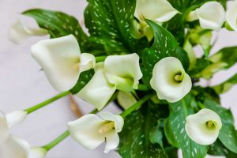

Claveles

Los claveles se presentan en tres tipos diferentes: claveles de flor grande, claveles en espray y claveles de flor enana. Los claveles de flor grande pueden crecer hasta más de 40 cm de altura con una flor grande por tallo
Precio: 10$
Lirios
Los lirios también se asocian a menudo con la simpatía y el renacimiento, lo que los convierte en una flor popular en las ocasiones de simpatía. Estas bellezas crecen con luz solar total o parcial y deben plantarse en primavera para que florezcan a finales del verano.
Precio: 20$
Peonias

La clave para cultivar una peonía próspera es asegurarse de plantar en el momento adecuado, por supuesto, cuidarla todo el tiempo. Dado quelas peonías pueden crecer bastante, tendrás que asegurarte de que el lugar que elijas sea lo suficientemente espacioso.
Precio: 15$
Gardenias

Las gardenias son famosas por sus flores blancas, perfumadas y cerosas, que pueden dar vida a un jardín. Dependiendo de tu ubicación geográfica (y de tus preferencias personales) podrás decidir si tu gardenia vivirá en el interior o en el exterior.
Precio: 12$
Orquideas

Los científicos han especulado que las orquídeas existen desde hace 100 millones de años. Con más de 30.000 tipos de orquídeas, algunas de las más populares son la orquídea Phalaenopsis, la orquídea Dendrobium, la orquídea Cattleya y la orquídea Vainilla. Las orquídeas suelen representar el amor, la fertilidad, la consideración y el encanto.
Precio: 20$